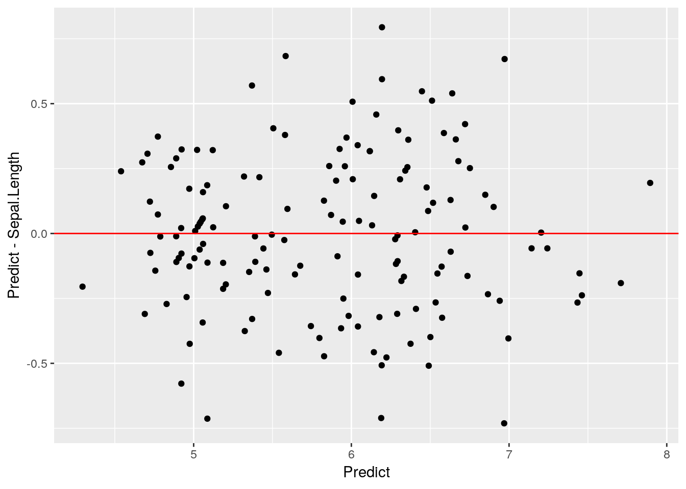
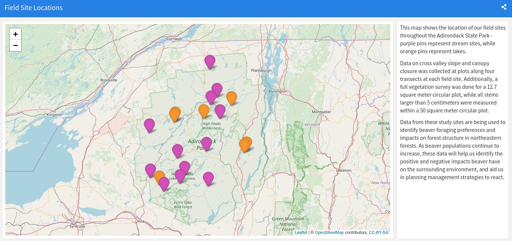

11 Special Applications
At this point in the book, we’ve covered most of the most essential tools you’ll use in R. However, there’s a wealth of alternative uses for R that we haven’t even begun to touch, but are good for new programmers and data analysts to be aware of. As such, this chapter will hopefully touch on the most important more specialized applications that we’ve yet to mention, giving you either a brief tutorial or links to where you can learn more.
11.1 Sampling
When we perform statistical analyses, we almost always work on sample data - a dataset of observations selected from a larger population, from which we can make assumptions about that larger population. Oftentimes, we’ve done some sampling by the time we first load R - for instance, by only measuring certain trees in the forest, or only looking at website activity for a certain time period. However, there are times where we need to sample from a digital dataset - often in order to perform further analyses faster or cheaper - where R can be quite helpful.
There’s quite a number of sampling methods we can undertake in R, but we’ll run through the two most common here. Before we get started, we’ll set our seed (so our “random” numbers are always the same - we’ll cover this concept in more detail in chapter 12) and load the tidyverse:
set.seed(42)
library(tidyverse)## ── Attaching packages ───────────────────────────────────────────────────────────────────────────────────────── tidyverse 1.2.1 ──## ✔ ggplot2 3.1.0 ✔ purrr 0.2.5
## ✔ tibble 1.4.2 ✔ dplyr 0.7.8
## ✔ tidyr 0.8.2 ✔ stringr 1.3.1
## ✔ readr 1.1.1 ✔ forcats 0.3.0## ── Conflicts ──────────────────────────────────────────────────────────────────────────────────────────── tidyverse_conflicts() ──
## ✖ dplyr::filter() masks stats::filter()
## ✖ dplyr::lag() masks stats::lag()11.1.1 Sample Random Samples
A simple random sample is exactly what it sounds like - out of a dataset with N observations, you select n of them at random. If your data is stored in a vector, this is easy enough to do with sample():
## Create a vector of 20 random numbers pulled from the normal distribution
vector1 <- rnorm(20)
## Sample 5 of those numbers at random
sample(vector1, 5)## [1] -0.09465904 2.01842371 1.37095845 -0.28425292 1.51152200If we want to select entire rows from a dataframe, the process is slightly more complicated. For instance, say we wanted to sample a single row from the iris dataset. The obvious solution has a confusing result:
head(sample(iris, 1))## Species
## 1 setosa
## 2 setosa
## 3 setosa
## 4 setosa
## 5 setosa
## 6 setosaRather than sampling a row at random, sample() is instead selecting a random column. Instead, we need to follow a two-step process to randomly select full rows. First, we create an index of selected rows, by calling sample() on a vector of row numbers from our dataset:
index <- sample(1:nrow(iris), 6)We can now subset our dataframe using this index to get our random sample:
iris[index, ]## Sepal.Length Sepal.Width Petal.Length Petal.Width Species
## 134 6.3 2.8 5.1 1.5 virginica
## 96 5.7 3.0 4.2 1.2 versicolor
## 144 6.8 3.2 5.9 2.3 virginica
## 91 5.5 2.6 4.4 1.2 versicolor
## 49 5.3 3.7 1.5 0.2 setosa
## 51 7.0 3.2 4.7 1.4 versicolor11.1.2 Stratified Random Sampling
Sometimes there’s a pretty good reason to not select your sample purely randomly. For instance, in our above example, we’ve somehow selected three versicolor and only one setosa flower, which might be a problem in our future analyses.
If we wanted to ensure that we sample evenly from each species of flower - known in stats terminology as a strata - we can make use of the sample_n() function from dplyr. To do so, we just group our dataset by the stratifying variable, then tell sample_n() how many samples we’d like to take from each strata:
iris %>%
group_by(Species) %>%
sample_n(2)## # A tibble: 6 x 5
## # Groups: Species [3]
## Sepal.Length Sepal.Width Petal.Length Petal.Width Species
## <dbl> <dbl> <dbl> <dbl> <fct>
## 1 5.1 3.8 1.5 0.3 setosa
## 2 4.4 3 1.3 0.2 setosa
## 3 6.4 3.2 4.5 1.5 versicolor
## 4 6.7 3.1 4.7 1.5 versicolor
## 5 6.3 2.8 5.1 1.5 virginica
## 6 6.7 2.5 5.8 1.8 virginica11.2 Bootstrapping
If your sample is itself random, you can safely assume that it resembles your population - the mean, standard deviation, and other characteristics of the distribution are relatively close to the true values for the population. You also assume that each observation in your dataset occurs about as often in your sample as it does in the population, on a proportional basis.
As such, it sometimes makes sense to replicate your sample several times in order to increase your effective sample size, making statistical analyses much more powerful. However, to do so we don’t want to simply multiply the original sample - instead, we want to resample from our original sample with replacement, to simulate drawing from the original population. This is slightly less preferred than just increasing your original sample size - but usually there’s a pretty good reason for your original sample size (either the cost or practicality of collecting more data), so bootstrapping is the best we can do.
We can use bootstrapping to tell us how variable our parameter estimates are - that is, if we had a different sample, how close would our estimates be? In order to apply this technique, we have to install the boot package:
install.packages("boot")The main function in this package - boot() - will sample from a vector with replacement a set number of times, and return an indexed vector containing these samples. When we provide a statistic argument, we can then test to see just how accurate our original estimates were:
library(boot)
mean_func <- function(x, index){
mean(x[index])
}
boot(iris$Sepal.Length, R = 10000, statistic = mean_func)##
## ORDINARY NONPARAMETRIC BOOTSTRAP
##
##
## Call:
## boot(data = iris$Sepal.Length, statistic = mean_func, R = 10000)
##
##
## Bootstrap Statistics :
## original bias std. error
## t1* 5.843333 0.001110733 0.06731316So our original estimate (labeled “original”) has an extremely low bias, with a small standard error to match. It seems like our sample mean is pretty close to the population mean!
Most often, bootstrapping isn’t used in these sorts of situations to evaluate parameter estimates. More commonly this technique is used behind-the-scenes to aggregate predictive models, as we’ll see next unit.
11.3 Model Predictions
Say we made a model to predict flower sepal lengths:
IrisForm <- lm(Sepal.Length ~ ., data = iris)We already know that we can assess this model in a number of ways - for instance, we can check the R^2 value and coefficient significance using summary():
summary(IrisForm)##
## Call:
## lm(formula = Sepal.Length ~ ., data = iris)
##
## Residuals:
## Min 1Q Median 3Q Max
## -0.79424 -0.21874 0.00899 0.20255 0.73103
##
## Coefficients:
## Estimate Std. Error t value Pr(>|t|)
## (Intercept) 2.17127 0.27979 7.760 1.43e-12 ***
## Sepal.Width 0.49589 0.08607 5.761 4.87e-08 ***
## Petal.Length 0.82924 0.06853 12.101 < 2e-16 ***
## Petal.Width -0.31516 0.15120 -2.084 0.03889 *
## Speciesversicolor -0.72356 0.24017 -3.013 0.00306 **
## Speciesvirginica -1.02350 0.33373 -3.067 0.00258 **
## ---
## Signif. codes: 0 '***' 0.001 '**' 0.01 '*' 0.05 '.' 0.1 ' ' 1
##
## Residual standard error: 0.3068 on 144 degrees of freedom
## Multiple R-squared: 0.8673, Adjusted R-squared: 0.8627
## F-statistic: 188.3 on 5 and 144 DF, p-value: < 2.2e-16However, if we wanted to actually use this model to generate predictions, we could do so using the predict() function in base R:
iris2 <- iris
iris2$Predict <- predict(IrisForm, newdata = iris2)We can then use this to generate residual plots for our model:
ggplot(iris2, aes(Predict, Sepal.Length)) +
geom_point() +
annotate("segment", x = -Inf, xend = Inf, y = -Inf, yend = Inf, color = "red")
ggplot(iris2, aes(Predict, Predict-Sepal.Length)) +
geom_point() +
annotate("segment", x = -Inf, xend = Inf, y = 0, yend = 0, color = "red")
Looks like a pretty good fit! We’ll be using predict() more in our next chapter, but I wanted to introduce it before we got too deep into the machine learning topics.
11.4 Even More Special Applications
The R community has built an incredible number of tools for all sorts of purposes, such as interactive apps, books, and full websites. R often isn’t the best - or, at least, the most straightforward - tool to use to build these, but it does have a few advanges over traditional methods:
- The packages used in making these products usually have shortcuts built in to handle the most common use cases.
- Building these things with R allows you to embed R code in your app/book/website, letting your graphs and other outputs adapt to different web browsers/viewers better than an image file would - and letting you build interactive visualizations.
- You already know R, and while these may require some HTML code to become fully polished, you can do the majority of the work in a language you already speak.
This section will focus on brief overviews of each application, with links to where you can learn more. The point is not to turn you into an expert on web development or HTML applets, but rather to give a sense of the possibility space your R skills have opened up for you.
11.4.1 Leaflet Maps
Leaflet is, in its original form, a JavaScript library for making interactive maps. The implementation in R, via the leaflet package, allows you to embed these maps in R Markdown documents and other web-based formats. For a great tutorial on how to use this package, check out the RStudio leaflet website.
11.4.2 FlexDashboard
knitr::include_graphics("Dash.png")
FlexDashboard is a system for making dashboards via R Markdown, combining text and visualizations into highly effective data-driven dashboards well suited to communicate your results to any stakeholders. These boards can be split across multiple pages, scroll, and incorporate all sorts of useful packages, making this package a wonderful resource for communicating your results. The best way to learn more is on the FlexDashboard website.
11.4.3 Bookdown
If you’re writing a book which incorporates R code, outputs, and can be formatted using R Markdown, one of the best packages for your needs is the Bookdown package. By formatting your book as a collection of R Markdown documents, you’re able to write your entire book in the RStudio environment, and see how your graphics and code will look to the reader while you write. The best resource for starting with Bookdown is the Bookdown book, with this blog by Sean Kross another useful reference.
(And yes, this book was entirely written in Bookdown).
11.4.4 Blogdown
Similar to the Bookdown package is Blogdown, which lets you use R Markdown to create websites. While it’s slightly more complicated - it requires you to fuss with Hugo somewhat, and understand a little about web design - it’s pretty easy to install a template and produce a professional looking website, with minimal coding required. The best place to learn more about Blogdown is the Blogdown book, with this blog by Alison Hill also useful in getting started.
11.4.5 Shiny
People really, really like interactive graphics. Being able to click their way through a series of visualizations - or maybe just alter the aesthetic choices of a final output - satisfies a lot of non-data-professionals in a big way.
I think interactive graphics are usually a waste of resources - while they’re cool, they take away your ability to narrate a story and effectively demonstrate your arguments, which are the main purposes of communicative graphics. While interactive graphics are more useful for data exploration, the amount of time they take to generate and polish makes them cost-prohibitive for this type of use. There are better tools for making these sorts of interactives, and they aren’t particularly useful in the printable types of documents most readers of this book will find themselves making.
With that screed out of the way, R’s shiny package does a pretty good job of letting people make interactive charts and HTML widgets with minimal pain - and some jobs do view proficency with Shiny a plus. You can find a list of resources for learning Shiny at the official website, including written tutorials and a free DataCamp course.